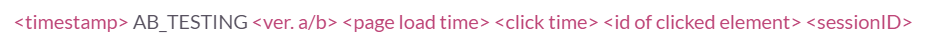
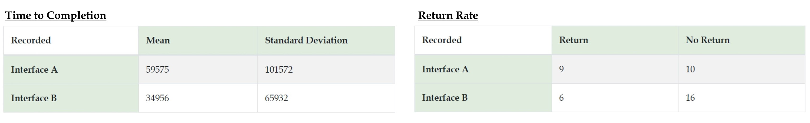

Which UI design is better?
A/B Testing
I. Task Setup
A/B testing is a powerful tool in user interface design. It allows us to understand how variations in our design affect user experience. To understand how A/B testing works, I modified an given online cactus shopping website into versions A and B and collected user data for statistical analysis. Users were given a link to the website with equal probability of getting version A (left) or B (right).
Changes I made to both interface A and B are:
- The wording of the primary headline was changed from “Cact-I + Cact-You = Cact-Us” to “Cact-I + Cact-U = Cact-Us”.
- The color of the secondary headline "An online succuulent store for your inner plant lady" was changed to dark olive green.
- The prices of all four cactus products are boldened.
- The paddings are adjusted so that the headlines and the cactus images are aligned.
Changes I made that are different in interface A and B include:
- Version A: I used a grid to wrap the four cactus products and added "col-sm-6" so that the grid becomes 2×2 (i.e., 2 columns per row). I also moved the shopping cart icon to the center of the page and immediately beneath the grid of cactus products.
- Version B: I did not use a grid and left all four products laid out vertically. I moved the shopping cart icon to the bottom right corner of the page, which is relatively farther away from the cactus products.
II. Hypothesis
The task for users is to order at least $150 of cacti. I then wonder: which UI design is better? Will there be any differences in how users interact with each?
The two metrics of investigation are:
- Time to Completion: the time it takes to complete the desired task (in this case, order cacti)
- Return Rate: whether a user returned to the page or not (i.e., a categorical variable)
Since one metric is continuous and the other is categorical, I select the statistical test for each accordingly and formulate the following hypothesis:
| Time to Completion | Return Rate | |
|---|---|---|
| Statistical Test Used | 2-sample t-test (one-sided) | Chi-squared test |
| Null Hypothesis | H0: Users of A and B spend the same time to completion on average, meaning that interface A and B are equally good. | H0: There is no association between which interface is used and the return rate, meaning that the return rate is the same for interface A and B. |
| Alternative Hypothesis | HA: Users of A will spend a longer time to completion on average, meaning that interface B is better than A. | HA: There is association between which interface is used and the return rate, meaning that the return rate is different for interface A and B. |
| Reasoning of the Hypothesis | tbd | tbd |
III. Data
I distributed the deployed Heroku link to my peers and recorded each user's interactions with the interface. The user logs were filtered into the following format for further analysis:
I went over the logs user by user, interpreted what each user did on the website, and took out the ones where the user only loaded the page but did nothing. I then calculated the time to completion for each user session and counted number of users who returned for each interface. In total, 41 valid observations were collected from 40 unique users (one user interacted with both interfaces). There are 19 and 22 data points for interface A and B, respectively.
Distributions of the data collected:
IV. Conclusion
After collecting and processing data, I conducted 2-sample t-test and chi-squared test in python and got the following results:
Time to Completion:
- We fail to reject the null hypothesis at the 10% significance level (and thus fail to reject at 5% and 1% levels as well) since 0.18643 > 0.10.
- There is no sufficient evidence to conclude the alternative.
- Therefore, interface A and B are not statistically significantly different in terms of time to completion.
Return Rate:
- We fail to reject the null hypothesis at the 10% significance level (and thus fail to reject at 5% and 1% levels as well) since 0.18281 > 0.10.
- There is no sufficient evidence to conclude the alternative.
- Therefore, interface A and B are not statistically significantly different in terms of return rate.
In conclusion, neither test shows any statistically significant difference between A and B.The tests conducted are inconclusive and I would need to do more testing to decide which interface to deploy.
V. Takeaways
Reflecting on the entire process, I think the following limitations might have affected the test results:
- While the layout of items could potentially affect time to completion, it might not have a significant impact in this case due to the small number of items required for the users to go through (i.e., there are only four cacti on the website).
Though this particular test gives inconclusive results, it would be interesting in the future to increase the number of cacti listed on the website and perform the test again with a larger number of users.